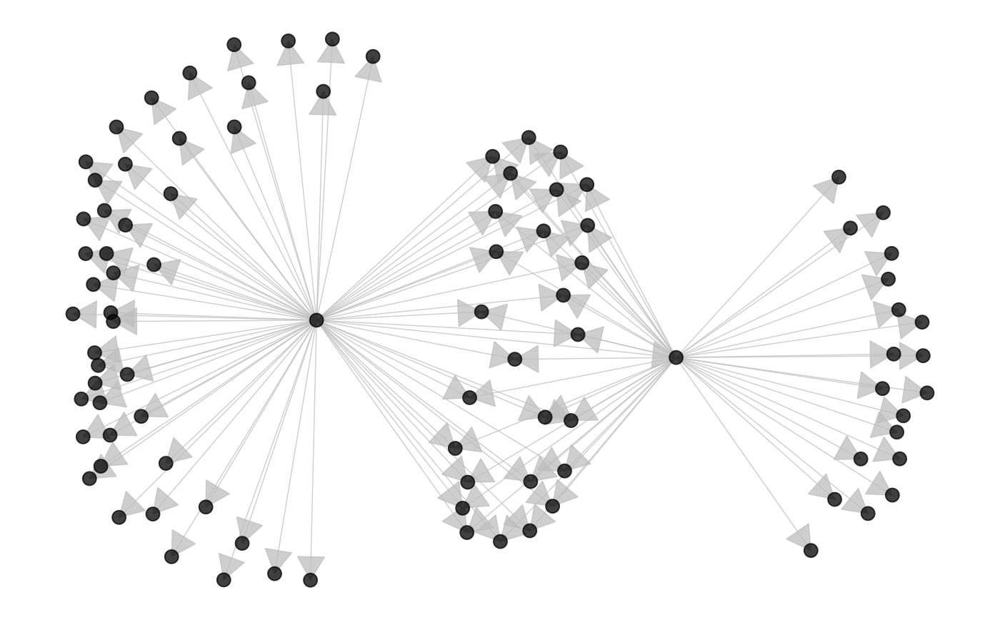

ggnetworkmap(): Network + map plot
Amos Elberg
Jan 10, 2015
Source:vignettes/ggnetworkmap.Rmd
ggnetworkmap.Rmd
GGally::ggnetworkmap()
ggnetworkmap() is a function for plotting elegant maps
using ggplot2. It builds on ggnet() by
allowing to draw a network over a map, and is particularly intended for
use with ggmap.
Example: US airports
This example is based on a tutorial by Nathan Yau at Flowing Data.
suppressMessages(library(ggplot2))
suppressMessages(library(maps))
suppressMessages(library(network))
suppressMessages(library(sna))
airports <- read.csv("http://datasets.flowingdata.com/tuts/maparcs/airports.csv", header = TRUE)
rownames(airports) <- airports$iata
# select some random flights
set.seed(123)
flights <- data.frame(
origin = sample(airports[200:400, ]$iata, 200, replace = TRUE),
destination = sample(airports[200:400, ]$iata, 200, replace = TRUE)
)
# convert to network
flights <- network(flights, directed = TRUE)
# add geographic coordinates
flights %v% "lat" <- airports[network.vertex.names(flights), "lat"]
flights %v% "lon" <- airports[network.vertex.names(flights), "long"]
# drop isolated airports
delete.vertices(flights, which(degree(flights) < 2))
# compute degree centrality
flights %v% "degree" <- degree(flights, gmode = "digraph")
# add random groups
flights %v% "mygroup" <- sample(letters[1:4], network.size(flights), replace = TRUE)
# create a map of the USA
usa <- ggplot(map_data("usa"), aes(x = long, y = lat)) +
geom_polygon(aes(group = group),
color = "grey65",
fill = "#f9f9f9", linewidth = 0.2
)
# trim flights
delete.vertices(flights, which(flights %v% "lon" < min(usa$data$long)))
delete.vertices(flights, which(flights %v% "lon" > max(usa$data$long)))
delete.vertices(flights, which(flights %v% "lat" < min(usa$data$lat)))
delete.vertices(flights, which(flights %v% "lat" > max(usa$data$lat)))
# overlay network data to map
ggnetworkmap(usa, flights,
size = 4, great.circles = TRUE,
node.group = mygroup, segment.color = "steelblue",
ring.group = degree, weight = degree
)
Example: Twitter spambots
This next example uses data from a Twitter spam community identified while exploring and trying to clear-up a group of tweets. After coloring the nodes based on their centrality, the odd structure stood out clearly.
data(twitter_spambots)
# create a world map
world <- fortify(map("world", plot = FALSE, fill = TRUE))
world <- ggplot(world, aes(x = long, y = lat)) +
geom_polygon(aes(group = group),
color = "grey65",
fill = "#f9f9f9", linewidth = 0.2
)
# view global structure
ggnetworkmap(world, twitter_spambots)
Is the network really concentrated in the U.S.? Probably not. One of the odd things about the network, is a much higher proportion of the users gave locations that could be geocoded, than Twitter users generally.
Let’s see the network topology
ggnetworkmap(net = twitter_spambots, arrow.size = 0.5)
Coloring nodes according to degree centrality can highlight network structures.
# compute indegree and outdegree centrality
twitter_spambots %v% "indegree" <- degree(twitter_spambots, cmode = "indegree")
twitter_spambots %v% "outdegree" <- degree(twitter_spambots, cmode = "outdegree")
ggnetworkmap(
net = twitter_spambots,
arrow.size = 0.5,
node.group = indegree,
ring.group = outdegree, size = 4
) +
scale_fill_continuous("Indegree", high = "red", low = "yellow") +
labs(color = "Outdegree")Some Twitter attributes have been included as vertex attributes.
# show some vertex attributes associated with each account
ggnetworkmap(
net = twitter_spambots,
arrow.size = 0.5,
node.group = followers,
ring.group = friends,
size = 4,
weight = indegree,
label.nodes = TRUE, vjust = -1.5
) +
scale_fill_continuous("Followers", high = "red", low = "yellow") +
labs(color = "Friends") +
scale_color_continuous(low = "lightgreen", high = "darkgreen")